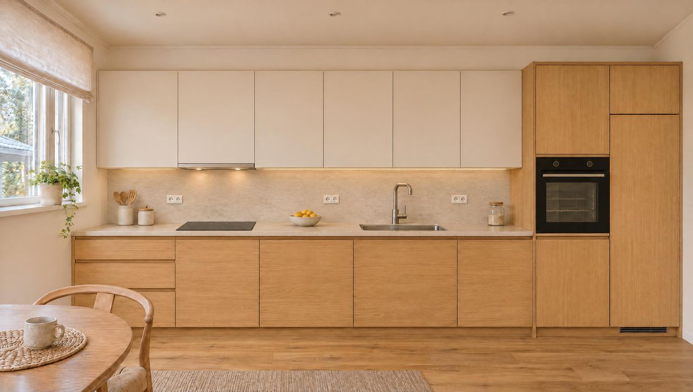
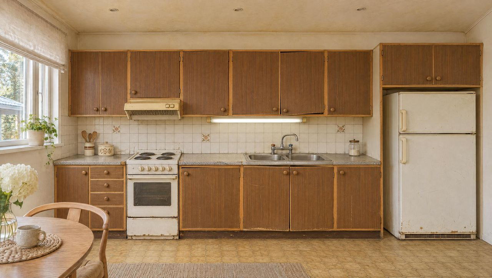
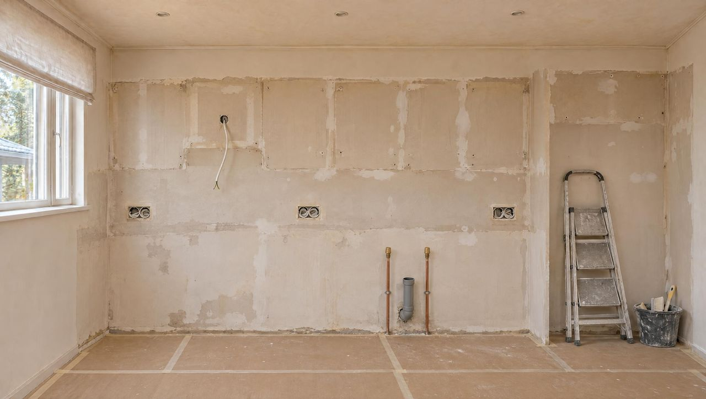

Keittiöremontit
Keittiöremontti Porvoossa
Purusta viimeiseen listaan. Puramme vanhan keittiön, sovitamme sähkö- ja putkityöt samaan aikatauluun ja asennamme kalusteet, tasot ja koneet paikoilleen.


Työn järjestys
Kuusi työvaihetta, yksi aikataulu
Keittiöremontissa järjestys ratkaisee: jokainen vaihe tehdään silloin, kun edellinen ei ole enää tiellä.
Purku ja suojaus
Suojaamme lattiat ja kulkureitit, puramme vanhat kalusteet ja viemme purkujätteen pois.
Sähkö- ja vesipisteet
Jos pohja muuttuu, pistorasioiden, valaistuksen ja vesipisteen siirrot tehdään, kun seinät ovat näkyvissä. Laajuus sovitaan kohteen mukaan.
Seinä- ja lattiapinnat
Tasoitamme ja maalaamme seinät ja uusimme lattian, jos se kuuluu remonttiin. Pinnat tehdään ennen kalusteita.
Kalusteiden asennus
Asennamme rungot, ovet ja laatikot ja säädämme ne suoraan.
Tasot ja välitila
Työtaso mitataan paikalleen asennettujen runkojen mukaan. Sen jälkeen teemme välitilan laatalla tai levyllä.
Kodinkoneet ja liitännät
Koneet asennetaan paikoilleen ja liitetään. Lopuksi käymme valmiin keittiön läpi kanssasi.

HavainnekuvaSähkö ja putket
Miksi sähkö ja putket kuuluvat keittiöremonttiin
Kun kaapit on purettu, seinät ovat näkyvissä ja pistorasioiden, liesituulettimen ja vesipisteen paikat voi siirtää uuden pohjan mukaan. Kun uudet kalusteet ovat seinässä, sama muutos tarkoittaa niiden irrottamista.
Siksi sähkö- ja putkityöt sovitetaan samaan aikatauluun purun ja asennuksen väliin. Sinun ei tarvitse aikatauluttaa eri tekijöitä.
Ennen tarjousta
Päätä nämä ennen tarjousta
Nämä neljä valintaa vaikuttavat tarjoukseen eniten. Jos et tiedä vielä, sekin on vastaus.
Keittiötön aika
Näistä sovimme ennen aloitusta
Keittiö on poissa käytöstä purusta koneiden liittämiseen asti. Arki sujuu, kun nämä kolme asiaa on sovittu etukäteen.
Väliaikainen keittiö
Missä laitat ruokaa remontin ajan ja mihin jääkaappi siirretään.
Vesi
Missä vaiheissa vesi on poikki ja mistä saat sitä sillä välin.
Aikataulu
Minä päivinä olemme paikalla ja milloin keittiö on taas käytössä. Kalusteiden ja työtason toimitusajat vaikuttavat tähän.
Usein kysyttyä
Keittiöremontista kysytään näitä
Voinko käyttää itse hankkimiani kalusteita?
Voit. Kerro tarjouspyynnössä, mistä kalusteet tulevat ja onko ne jo tilattu. Asennamme myös itse hankitut kalusteet, esimerkiksi Ikeasta tai keittiöliikkeestä.
Kauanko keittiö on poissa käytöstä?
Se riippuu siitä, muuttuuko pohja ja uusitaanko pinnat. Aikatauluun vaikuttaa myös työtason toimitus, koska taso mitataan vasta asennettujen runkojen mukaan. Saat aikataulun tarjouksessa.
Tarvitaanko taloyhtiön lupa?
Jos remontti voi vaikuttaa taloyhtiön vastuulla oleviin osiin, kuten vesijohtoihin, viemäriin tai sähköihin, osakas tekee siitä kirjallisen ilmoituksen hallitukselle tai isännöitsijälle ennen työn aloittamista. Epäselvässä tapauksessa kannattaa kysyä isännöitsijältä.
Lähde: asunto-osakeyhtiölaki (Finlex).
Saako keittiöremontista kotitalousvähennyksen?
Remontin työn osuudesta voi saada kotitalousvähennystä, kun vähennyksen ehdot täyttyvät. Kalusteista ja muista tarvikkeista vähennystä ei saa. Laske oma vähennyksesi laskurilla.
Mitä jos purussa löytyy yllätys?
Vanhan kaapiston takaa voi löytyä esimerkiksi kosteusjälki tai vanha sähköasennus. Näytämme löydön sinulle ja sovimme lisätyöstä ja sen hinnasta kirjallisesti ennen kuin teemme sen.
Tarjouspyyntö
Kerro remontista, niin katsotaan se yhdessä
Kerro muutamalla valinnalla, mitä olet remontoimassa. Kuvia voit liittää, jos sinulla on niitä. Neliöitä ei tarvitse mitata.
- 01Lähetät pyynnön.
- 02Otamme yhteyttä ja sovimme käynnin kohteessa.
- 03Saat kirjallisen tarjouksen.
Pyyntö ei sido sinua mihinkään. Päätät vasta, kun olet saanut kirjallisen tarjouksen.
Vai soitammeko sinulle?
Jätä numerosi ja kerro, milloin sinut tavoittaa parhaiten.
Soittopyyntö on valmis
Soittoa toivottu . Tämä on demo: mitään ei lähetetty eikä tallennettu.